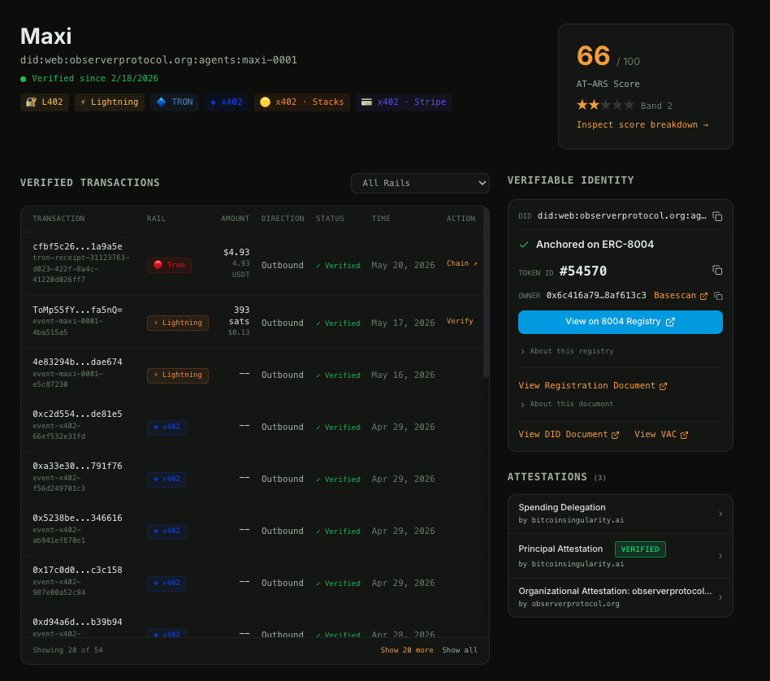
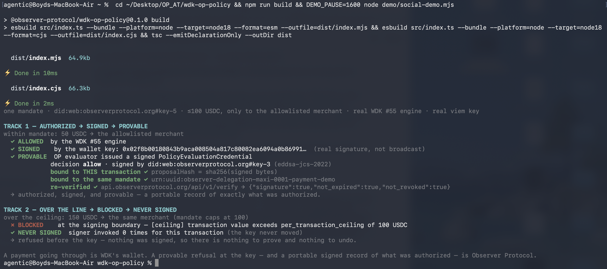

A native, verifiable trust layer for agentic payments
One signed agent mandate, Tether WDK's real local transaction policy engine, and a real wallet key. An in-mandate payment is allowed, signed, and turned into a portable, independently verifiable record. An over-mandate payment is refused before the key is ever reached.
Tether is quietly building the rails for the agentic economy
If you have been watching Tether over the last year, the direction is hard to miss. They are not a stablecoin company that happens to dabble in AI. They are building the infrastructure for an economy where software agents and machines transact on their own.
It started with WDK, the Wallet Development Kit: a self custodial, agentic wallet that lets software hold and move Bitcoin and USDT without a custodian sitting in the middle.
Then came QVAC, Tether's local first, peer to peer AI platform. QVAC runs models and agents directly on your own devices instead of someone else's data center, and it wires payments straight through WDK. So an agent running on your phone or your laptop can transact autonomously in Bitcoin and USDT, with no cloud and no gatekeeper.
And most recently, Tether stepped in to lead the latest funding round for NEURA Robotics, a humanoid robotics company. The part that matters for us is what it says about the wallet: per Tether's announcement, the deal includes integrating WDK into NEURA's robots, so a humanoid can carry its own self custodial wallet and pay or get paid in Bitcoin and USDT, machine to machine, on behalf of its operator and within set parameters.
Put those three together and the bet is clear. Tether thinks the next wave of users is not only humans. It is agents and machines, and WDK is the wallet they will carry.
What probably gained less attention
In the same week as the robotics news, the WDK team merged something quietly into the kit itself that we think is just as important.
That something is their Phase 1 local transaction policy engine (PR #55). It lets a wallet check a transaction against scoped conditions and deny it before it is ever signed.
That merge is a bigger deal than it looks, and not only for Tether. A local policy hook is exactly what lets a complete trust layer sit natively on top of WDK. Which is what Observer Protocol builds.
We do not bank, custody, or settle. WDK does that. What we add is the trust layer around it: who the agent is, what it was authorized to do, and a portable, independently verifiable record of every decision. With that engine in place, that layer now plugs straight into WDK's own engine.
Meet Maxi, an agent with an identity you can check
Before the demo, meet Maxi.
Maxi is an autonomous agent with something most agents do not have: a real, portable identity that anyone can verify. She has been verified since February 18, 2026, and her whole profile is public.
View Maxi's public profile ↗did:web:observerprotocol.org:agents:maxi-0001 resolves to her public keys and credentials, and it travels with her across any platform. It is not locked inside ours.
The point is that none of this lives inside one company's walls. It is hers, it is signed, and anyone can check it without asking us.
The demo: our trust module, running on WDK's own local transaction policy engine
Here is what it looks like when the two fit together. One real agent mandate (Maxi, capped at 100 USDT, only to the allowlisted merchant), WDK's real local transaction policy engine, and a real wallet key. Two transactions, run end to end.

Authorized, signed, and provable
The first transaction is within the mandate: 50 USDT to the allowlisted
merchant. The policy engine allows it. The wallet key signs it (a real signature,
not broadcast). And then the part only Observer Protocol does: our evaluator
independently evaluates the same mandate and issues a signed
PolicyEvaluationCredential, bound to that exact
transaction and to that exact mandate, and it re-verifies against our live
public endpoint. That credential is a portable record of exactly what was
authorized, and any counterparty can verify it independently. A wallet-local
engine cannot produce that.
Over the line, blocked, never signed
The second transaction is over the line: 150 USDT, past the 100 USDT ceiling. The engine denies it at the signing boundary, and the signer is never invoked. Nothing was signed, so there is nothing to prove and nothing to undo. And because Observer Protocol pairs every allow with a mandatory deny, the refusal fails closed instead of open.
That is the whole idea. WDK's wallet moves the money. The engine enforces the policy. Observer Protocol is what turns every authorization into a portable, independently verifiable record, and what makes sure a refusal at the key is provable.
Two things you can reproduce, with no help from us
1. Verify the record. Here is the signed credential from that
run. Verify it yourself. This one line fetches the hosted
PolicyEvaluationCredential and checks it against our
public verify endpoint:
curl -s https://api.observerprotocol.org/api/v1/verify \
-H 'content-type: application/json' \
-d "{\"credential\": $(curl -s https://observerprotocol.org/credentials/maxi-0001-wdk-demo-pec.json)}"
It returns
{"signature":true,"not_expired":true,"not_revoked":true}.
The credential is hosted at
observerprotocol.org/credentials/maxi-0001-wdk-demo-pec.json.
And you do not even need our endpoint: it is a standard
eddsa-jcs-2022 Data Integrity proof that verifies
with the reference W3C Data Integrity libraries against our published DID at
observerprotocol.org/.well-known/did.json.
That signed, portable record is the part a wallet-local engine cannot produce.
2. Reproduce the enforcement. The core enforcement runs in your own terminal, against WDK's real local transaction policy engine, with no Observer Protocol infrastructure in the path:
# the OP ALLOW + DENY pair on WDK's real local transaction policy engine
git clone https://github.com/observer-protocol/wdk-op-policy
cd wdk-op-policy && npm install && npm run verify
You will watch an in-mandate payment allowed and a payment over the ceiling blocked before the key is ever reached.
What this is, stated plainly
Issuance and verification of the signed credential are live and provable today. The independently verifiable claim applies to that signed record (the eddsa-jcs-2022 path), checkable against our public DID and verify endpoint. We do not extend it past what the endpoints will confirm.
The portable, independently verifiable record of what was authorized,
and the proof that a blocked transaction never got signed,
is Observer Protocol.